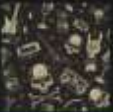

Los mejores videos de ROCK |
 |
| Rock en Español | Rock Anglo | Rock Gringo |
|
and roll a principios de la decada de 1950 en Estados Unidos y que evoluciono en un gran rango de diferentes estilos en los años 1960, particularmente en ese pais y Reino Unido. Tiene sus raices en el rockand roll de los años 50s, proveniente de la combinacion de generos anteriores como el blues, rhythm and blues y el country. La musica rock tambien se nutrio fuertemente del blues electrico y el folk, e incorporo influencias del jazz, la musica clasica y otras fuentes. El rock se ha centrado en la guitarra electrica, normalmente como parte de un grupo integrado por cantante, bateria, bajo y, algunas veces instrumentos de teclado como el organo y el piano. Usualmente, el rock se centra en las canciones, habitualmente con compas de 4/4 y una estructura verso-estribillo; sin embargo, el genero se ha vuelto extremadamente diverso y las caracteristicas musicales comunes son dificiles de definir. Como la musica pop, las letras se centran a menudo en el amor romantico, pero tambien tratan un rango amplio de otros temas con un enfoque frecuente en lo social, lo personal y lo politico. |